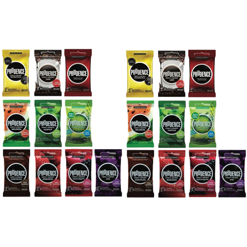
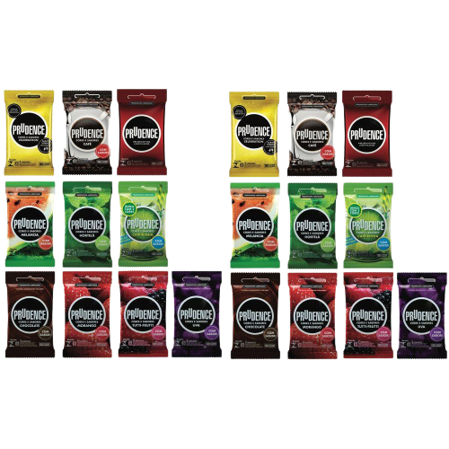

Sobre a Prudence
Prudence
Preservativo, camisinha, chame como quiser! O importante mesmo é não deixar de usar este que é o método mais seguro contra a transmissão de ISTs (Infecções Sexualmente Transmissíveis), além do HIV/aids e das hepatites virais. Isso sem falar na contracepção, pois ela evita a gravidez não planejada. Como o Carnaval está quase aí, o Ministério da Saúde reforça: a recomendação é de que o preservativo seja usado em todas as relações sexuais. E tem para homens e mulheres, viu? As camisinhas masculinas e femininas são distribuídas pelo SUS, gratuitamente, nas Unidades Básicas de Saúde. Geralmente elas ficam logo na entrada das UBS. É só chegar e pegar! Existe varios tamanhos: extra p, pp, p, g, gg e extra g.
10 CURIOSAIDADES SOBRE BOB ESPONJA
- 1. Nunca abra a embalagem da camisinha com os dentes ou outros objetos que possam danificá-la...
- 2. Não use duas camisinhas ao mesmo tempo, porque elas podem se romper ou estourar...
- 3. Nunca reutilize uma camisinha: ela foi produzida para ser usada apenas uma vez. É um produto descartável...
- 4. Não use a camisinha apenas na hora da ejaculação. O preservativo deve ser colocado desde o começo do contato.
- 5. Quando se trata de HIV e IST, a camisinha é o jeito mais prático de se proteger.
- 6. O Brasil é um dos países que mais adquire camisinhas em todo o mundo. E por isso tem uma indústria própria
- 7. O preservativo nacional é 100% produzido com do látex natural das seringueiras da Amazônia.
- 8. A camisinha foi inventada da forma como é hoje em 1843. Mas, versões com outros materiais datam de 1300 a.C, como a dos egípcios. Eles usavam um envoltório feito de linho, pele e materiais vegetais.
- 9. A primeira loja de preservativos foi fundada em Londres, na Inglaterra, no século XVIII.
- 10. O preservativo não tem hormônios e nem provoca alterações menstruais.